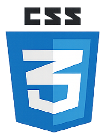
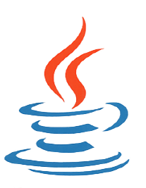

더 좋은 구조와 안정적인 서비스를 만들기 위해 고민하는 백엔드
개발자입니다.
작은 인터렉션 하나에도 이유를 담고, 사용자가 자연스럽게 흐름을 따라갈 수
있는 서비스를 만듭니다.


소통을 잘하고 다른 사람의 의견을 잘 수용하여 팀원들과의 협력에서 문제가
생기지 않게 서로 배려하고 도울 수 있습니다.
프로그래밍에 대한
이해도가 매우 뛰어나며 큰 어려움 없이 다양한 코드를 짤 수 있습니다.